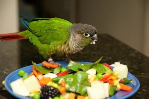
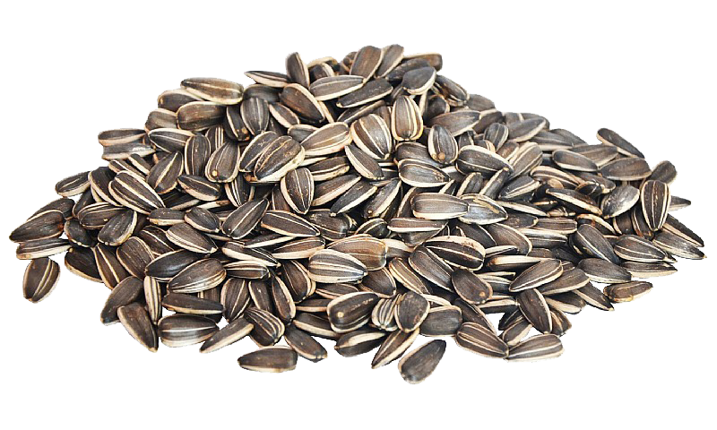

Main Diet 
In the Wild
Wild green cheek conures can be found eating various fruits, berries, bugs, larvae, seeds and nuts. Every once in awhile they also munch on small rock bits or sand as this helps with digestion.
At Home
The best diet for your conure is a pellet-based one. Pellets are specifically made to be a very healthy and nutritious meal for your conure; they contain a good amount of minerals, vitamins, and amino acids. A variety of different brand pellet mixes can be purchased from your local pet store. Although pellets alone will provide your bird with excellent nutrition, it is also important to feed your green cheek conure fruits and vegetables throughout the day. Like humans, conures can get bored when they are given the same food everyday. Pieces of apple, banana, orange, pear, pineapple, kiwi, etc. are fantastic snacks that your conure will find delicious!
Treats and Human Food

Green cheek conures find foods like sunflower seeds, peanut butter, and even ice cream very yummy, however
these treats must be snacked on in moderation. Oily, fatty foods can make your bird
unhealthy if eaten too often, and big quantities of dairy products are hard for parrots to digest.
When eating around your bird, you will find that your conure will be extremely curious about whatever you are snacking on, and they will likely want to try it!
Luckily, most human foods are acceptable for conures to eat. You should only completely avoid
giving your conure is stuff that is greasy, sugary, or salty (as these are generally unhealthy foods),
as well as raw beans, avocado, or chocolate. These last three items are delicious snacks
for humans, but they are completely toxic to parrots. Always be careful and attentive
when it comes to feeding your conure.
green cheek conure
Rachael Mohl
CIS*1050
April 2020
If you have any questions, just contact me at rmohl@uoguelph.ca!